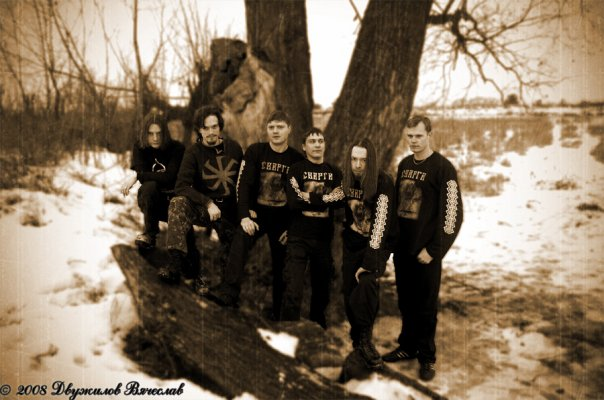
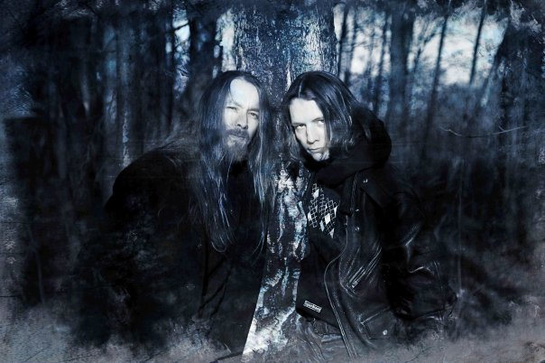

Сжечь
Сжечь деревни взглядом безумным
Вырвать сердце у лежащих в снегу
Мечом разрубить кольчужины вражьи
Поставить Богов на месте кострищ
Вернуться героем зализывать раны
Голосом хриплым петь песни лесам
Коня оседлать, поскакать по степям
Когда вороны вновь позовут за собой
Имя свое сделать священным
Кровью врагов высекать на камнях
Местью свирепой душу наполнить
Сталь наточить и враз затупить
Рунами древних всю грудь исписать
Сварогом клясться до последнего дня
Сурью священную выпить до дна
И черным курганом остаться в веках

В ночь волховал
В ночь волховал, осокой грустил
Туманом мечтал, облаком плыл
Вернувшийся в дом с кровавой сечи
Речною водою вымыл мечи
Быстрым ручьем мчался домой
Зверем ночным слушал свой вой
Коготь медвежий на шею одел
Одеть-то одел, да снять не сумел
Кинулся волком тропы чесать
Безумием снега день отнимать
Верил богам, говорил в тишине
С пламенем красным, позабыл о войне
Сжег пустоту, забылся во мгле
Увидел тоску в горячем угле
Солнцем разбужен, ушел налегке
Утопить свою память в быстрой реке

Голос Лютеня
Я слышал метель
Она пела песню лесам
Последнюю песнь
Перед тем, как их разбудить
Я видел закат
Чуть позже, чем в дни холодов
Я видел рассвет
Чуть раньше, чем месяц назад
Но голос Лютеня
Зовет меня за собой
Голос Лютеня
Говорит мне: «Иди же за мной!»
Солнце стало теплей
Немного, но все же теплей
И даже снега
Слегка поменяли свой цвет
Дыханье ветров
Затихло средь белых полей
И Зима пронеслась
Верхом на усталом коне
Но голос Лютеня
Все зовет меня за собой
Голос Лютеня
Говорит мне: «Ступай же за мной!»
перейдите на главную страницу